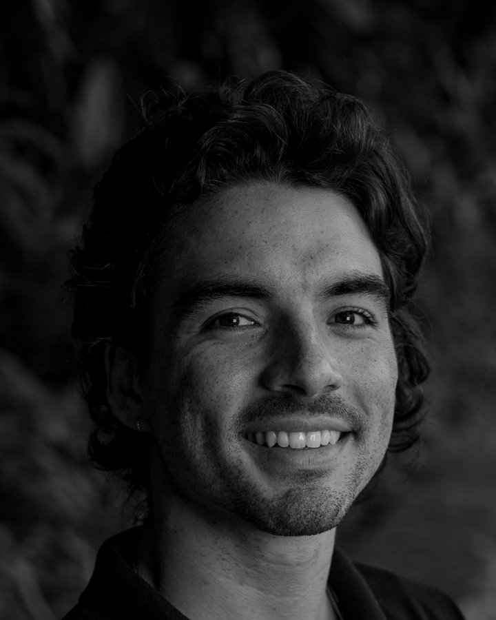
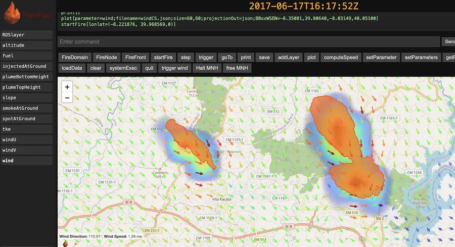

Antonio Leblanc — Rio de Janeiro
Intern to CTO
in ten months.
Today I protect 40 million hectares
against wildfire.
I lead Pantera at 1.5°C — detection, risk, response, and impact, covering the Pantanal and indigenous territories. Policy, community, and ethics matter as much as the model.

A camera network across the Pantanal and indigenous territories — built by the engineering, ML, and environmental science team I lead.
0M+ ha
Protected
0
Cameras in the field
0%
Detection accuracy

ForeFire — CNRS, since 2022
Research and operations are two different sports.
A real run in Portugal, 2017 — wind at 1.29 m/s, engine output, no fabricated overlay. I'm a maintainer since 2025 and co-author on its JOSS paper: reviewing and merging PRs, cutting releases, Dockerization, CI/CD, documentation.
I lead architecture, satellite, fire spread risk, response, and operations — with the engineering, ML, and environmental science team that builds it with me.
Co-founder and CTO since 2020, Rio de Janeiro.
Eight AI agents run sales, support, and marketing on Hermes, open-source, on our own servers. One alone has opened 400+ issues, about 25% closing without real review, mine included.
Open to a technical second opinion for early-stage climate teams, or to hear what you're building in wildfire, deforestation, or agentic systems.